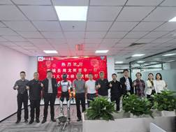
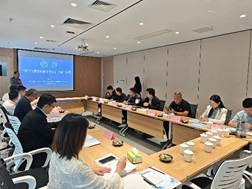
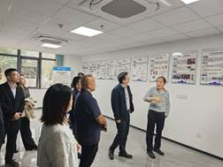

为推动高校科研成果转化，助力地方文旅产业数字化升级，11月12日至13日，厦门大学闽台非遗文化数字化保护与智能处理文旅部重点实验室与连城县人民政府、元启创新（厦门）机器人有限公司开展系列考察交流活动，以技术赋能为核心，共探校地校企协同发展新路径。
12日下午，在厦门大学翔安校区，重点实验室主任史晓东带领连城县考察组一行，实地参观了实验室的科研成果。考察过程中，实验室团队详细展示了在闽台非遗数据库建设、智能处理、数字孪生、互动传播等方面的技术成果，通过动态演示让考察组直观感受数字化技术对非遗传承的赋能作用。
13日上午，重点实验室团队与连城县考察组一同前往元启创新（厦门）机器人有限公司参访。在随后召开的“连城数字文旅”专题座谈会上，重点实验室作为核心技术支撑方，率先分享了针对连城文旅产业的数字化升级规划，提出以非遗数字化保护、智能导览系统搭建、沉浸式文旅产品开发为核心的合作思路。会上，连城县汇报了文旅发展现状、技术需求和人才招引政策，元启创新介绍了智能机器人技术优势，三方围绕技术联合研发、成果落地应用、人才联合培养等达成多项共识。重点实验室主任史晓东表示，将充分发挥科研与人才优势，联合企业技术力量，定制化推动连城文旅数字化转型，让高校智力资源真正服务地方发展。
此次活动由厦门大学文旅部重点实验室牵头串联，成功搭建了“高校科研+地方需求+企业落地”的合作闭环。实验室将以此次交流为起点，持续深化与连城县、元启创新的务实合作，聚焦非遗传承数字化、景区服务智能化、文旅产品创新化等关键领域，推动技术研发与实际需求精准对接，为连城打造数字文旅新品牌提供坚实的技术与智力支撑，助力地方文旅产业高质量发展。

 